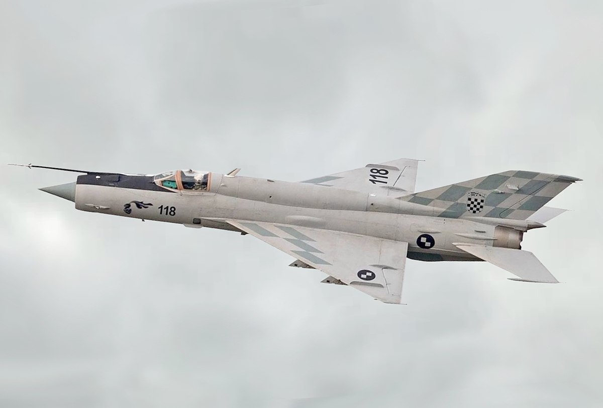

F86-Sabre
The North American F-86 Sabre, sometimes called the Sabrejet, is a transonic jet fighter aircraft. Produced by North American Aviation, the Sabre is best known as the United States' first swept-wing fighter that could counter the swept-wing Soviet MiG-15 in high-speed dogfights in the skies of the Korean War (1950–1953), fighting some of the earliest jet-to-jet battles in history. Considered one of the best and most important fighter aircraft in that war, the F-86 is also rated highly in comparison with fighters of other eras.[6] Although it was developed in the late 1940s and was outdated by the end of the 1950s, the Sabre proved versatile and adaptable and continued as a front-line fighter in numerous air forces.
MiG-21
The Mikoyan-Gurevich MiG-21 (Russian: Микоян и Гуревич МиГ-21; NATO reporting name: Fishbed) is a supersonic jet fighter and interceptor aircraft, designed by the Mikoyan-Gurevich Design Bureau in the Soviet Union. Its nicknames include: "balalaika", because its planform resembles the stringed musical instrument of the same name; "Ołówek", Polish for "pencil", due to the shape of its fuselage,[2] and "Én Bạc", meaning "silver swallow", in Vietnamese.
MiG-25
The Mikoyan-Gurevich MiG-25 (Russian: Микоян и Гуревич МиГ-25; NATO reporting name: Foxbat) is a supersonic interceptor and reconnaissance aircraft that is among the fastest military aircraft to enter service. Designed by the Soviet Union's Mikoyan-Gurevich bureau, it is an aircraft built primarily using stainless steel. It was to be the last plane designed by Mikhail Gurevich, before his retirement.[2]
F-15 Eagle

The McDonnell Douglas F-15 Eagle is an American twin-engine, all-weather tactical fighter aircraft designed by McDonnell Douglas (now part of Boeing). Following reviews of proposals, the United States Air Force (USAF) selected McDonnell Douglas's design in 1969 to meet the service's need for a dedicated air superiority fighter. The Eagle first flew in July 1972, and entered service in 1976. It is among the most successful modern fighters, with over 100 victories and no losses in aerial combat, with the majority of the kills by the Israeli Air Force.[3][4]